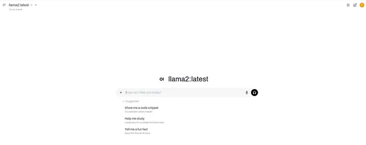

Ollama is a powerful tool that makes interacting with AI models simple and efficient. With local processing for privacy and quick deployment, it’s perfect for developers, educators, and curious learners.
Update Your System
1- Before installing anything, update your package list:
sudo apt update && sudo apt upgrade -y
2- Install Ollama
curl -fsSL https://ollama.com/install.sh | sh
If your system doesn’t have an Nvidia or AMD GPU, Ollama will use the CPU to run LLM models.
3- Pull a model
ollama pull <<model-name>>
For instance:
ollama pull llama2
4- Run a model
ollama run <<model-name>>
For instance:
ollama run llama2
Open WebUI
If you want to use a ChatGPT-like interface on your local machine and connect it to Ollama, consider using Open WebUI.

Install it via docker
docker run -d --network=host -v open-webui:/app/backend/data -e OLLAMA_BASE_URL=http://127.0.0.1:11434 --name open-webui --restart always ghcr.io/open-webui/open-webui:main
then open it in your browser: http://localhost:8080